DE2-Electronics: Tutorial Sheet 1
Author: Benedict Greenberg
Created: 24 Jan 2017
Signals in Time and Frequency Domains
Electronics 2 - Design Engineering
Imperial College London
Contents
Runtime commands
clc clear all format compact % condenses the outputs in the command window close all % closes all existing open figures % For debugging: % set(0,'DefaultFigureVisible','off'); % suppresses plots after this point
Question 1
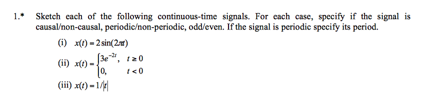
N = 500; t0 = -5; tf = 5; % opening time parameters t = linspace(t0,tf,N); % arbitrary t values x1 = 2*sin(2*pi*t); % part i x2 = zeros(1,length(t)); % part ii for i = 1:length(t) if t(i) >= 0 x2(i) = 3*exp(-2*t(i)); else x2(i) = 0; end end x3 = 1./abs(t); % part iii figure; plot(t,x1); originAxes(); title('Q1 Part i') figure; plot(t,x2); originAxes(); title('Q1 Part ii') figure; plot(t,x3); originAxes(); title('Q1 Part iii') % are signals: causal, periodic, odd/even


Part (i) shows a non-causal, periodic (T= 1 sec), odd function.
Part (ii) shows a causal, aperiodic function which is neither even/odd.
Part (iii) shows a non-causal, aperiodic, even function.
Question 2
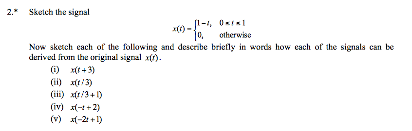
Use the same values for t as in previous question.
See q2 function in appendix.
x = q2(t); x1 = q2(t+3); x2 = q2(t/3); x3 = q2(t/3+1); x4 = q2(-t+2); x5 = q2(-2*t+1); figure(4); plot(t,x,t,x1,t,x2,t,x3,t,x4,t,x5); originAxes(); title('Q2') legend('x','i: x(t+3)','ii: x(t/3)','iii: x(t/3+1)','iv: x(-t+2)','v: x(-2t+1)')

Part (i) translation left by 3.
Part (ii) expansion in x by factor 3.
Part (iii) expansion in x factor 3 followed by translation left by 3
Part (iv) reflect in y axis and shift right by 2
Part (v) reflection in y axis, compress by factor 2, and shift right by half.
Question 3
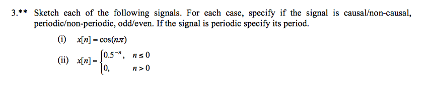
Use the same values for t as in previous question.
x1 = cos(t*pi); % part i x2 = zeros(1,length(t)); % part ii for i = 1:length(t) if t(i) <= 0 calc = 0.5^(-t(i)); x2(i) = calc; else x2(i) = 0; end end figure; plot(t,x1); originAxes(); title('Q3 Part i') figure; plot(t,x2); originAxes(); title('Q3 Part ii')
 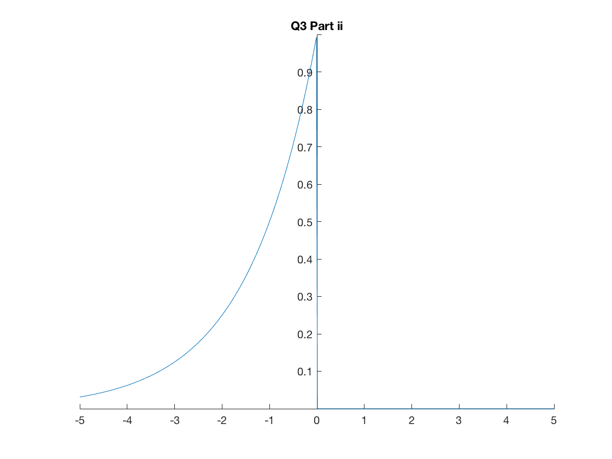
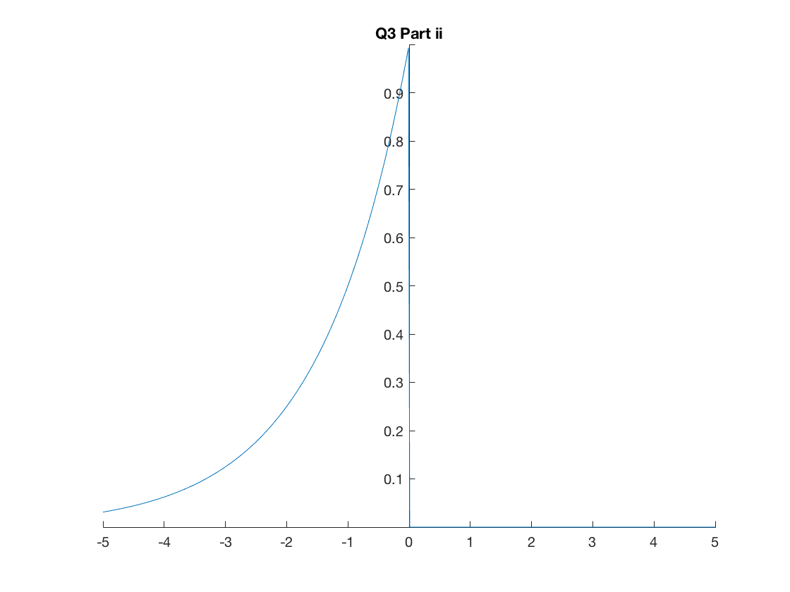 Part (i) is a non-causal, periodic (T= 2 sec), even function.
Part (ii) is a non-causal, aperiodic function neither even/odd.
Question 4
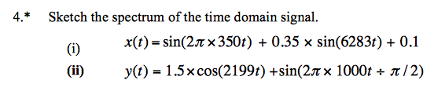
NOTE: that the sampling frequency of the time domain MUST match the sampling frequency of the frequency domain. If this does not happen then the fft function will not correctly match up the time and frequency samples.
fs = 8192; % set the sampling frequency dt = 1/fs; % find dt t = -5:dt:5; % redefine our time span using set sampling freq x = sin(2*pi*350*t) + 0.35*sin(6283*t) + 0.1; y = 1.5*cos(2199*t) + sin(2*pi*1000*t / (pi/2) );
In practise we see that the sine wave takes on the form:
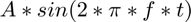
where is the amplitude, 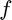 is the frequency as seen in the spectrum, and 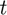 is the time variable.
frequency_magnitude_peaks is an outputted matric that find the peaks of the spectrum and returns each peak in a row. Column 1 corresponds to peak frequency and column 2 corresponds to the peaks magnitude.
plot_spectrum(x,8192) title('Q4 Part i spectrum') plot_spectrum(y,8192) title('Q4 Part ii spectrum')
Question 5
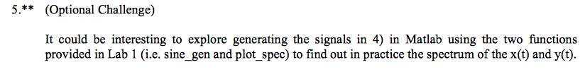
This was done in Q4.
Appendix - functions
These global functions are placed at the end of the script.
Firstly originAxes() set the environment of the plot.
function originAxes() % this sets the axes to pass through the origin, removes the box around the % plot and sets the background of the figure to white set(gcf,'color','w'); ax = gca; ax.XAxisLocation = 'origin'; ax.YAxisLocation = 'origin'; ax.Box = 'off'; end
Question 2 utilises a function to save space.
function x = q2(t) % this function is required for question 2 x = zeros(1,length(t)); for i = 1:length(t) if 0 <= t(i) && t(i) <= 1 x(i) = 1-t(i); else x(i) = 0; end end end
Sine generation function as seen in Lab 1.
function [sig] = sine_gen(amp, f, fs, T) % Function to generate a sine wave % % fs = sampling frequency % T = duration % usage: signal = sine_gen(1.0, 440, 8192, 1) dt = 1 / fs; t = 0:dt:T; sig = amp*sin(2*pi*f*t); end
Plotting a spectrum as seen in Lab 1 but with some modifications such as identifying peaks.
function plot_spectrum( sig, fs ) % Function to plot frequency spectrum of sig % usage: % plot_spectrum(sig, 8192) magnitude = abs(fft(sig)); N = length(sig); df = fs / N; f = 0:df:fs/2; Y = magnitude(1:length(f)); [pks,locs] = findpeaks(Y/(N)*2); % finds peaks in spectrum figure % ensures plot is placed on new figure plot(f, Y/(N)*2,f(locs),pks,'or'); % plots spectrum and circles peaks xlabel('\fontsize{14}frequency (Hz)'); ylabel('\fontsize{14}Magnitude'); frequency_magnitude_peaks = transpose([f(locs);pks]) % peaks are stored in an array where % column 1 is frequency % column 2 is magnitude at respective frequencies end
frequency_magnitude_peaks = 349.9957 0.9970 999.9878 0.3330 frequency_magnitude_peaks = 349.9957 1.4520 636.5922 0.8798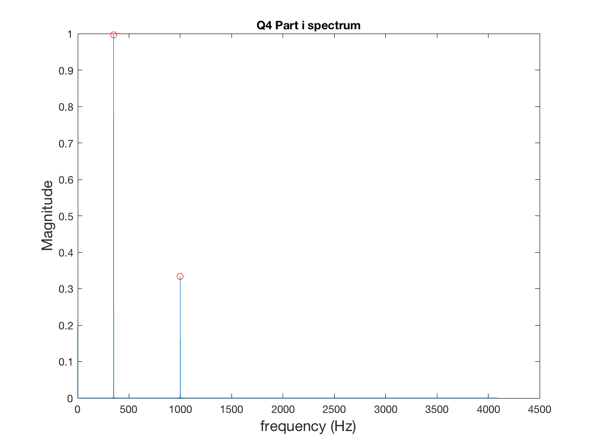 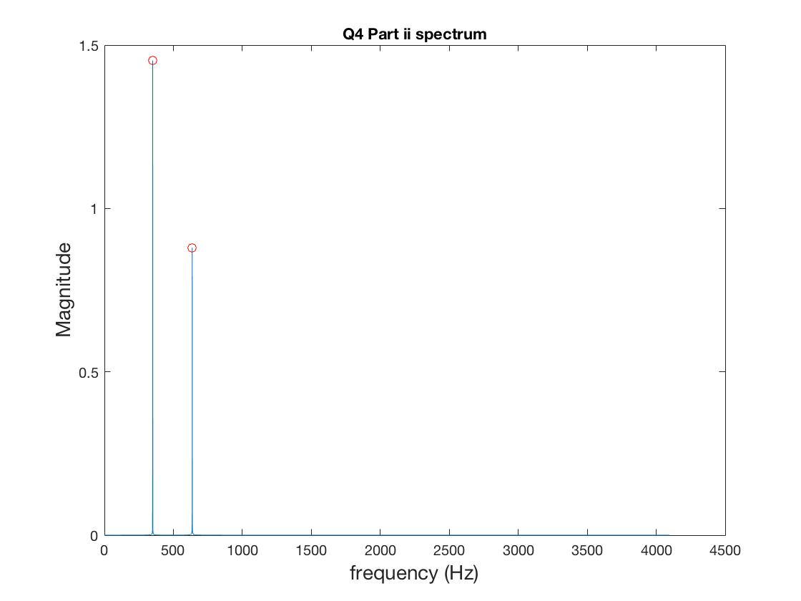